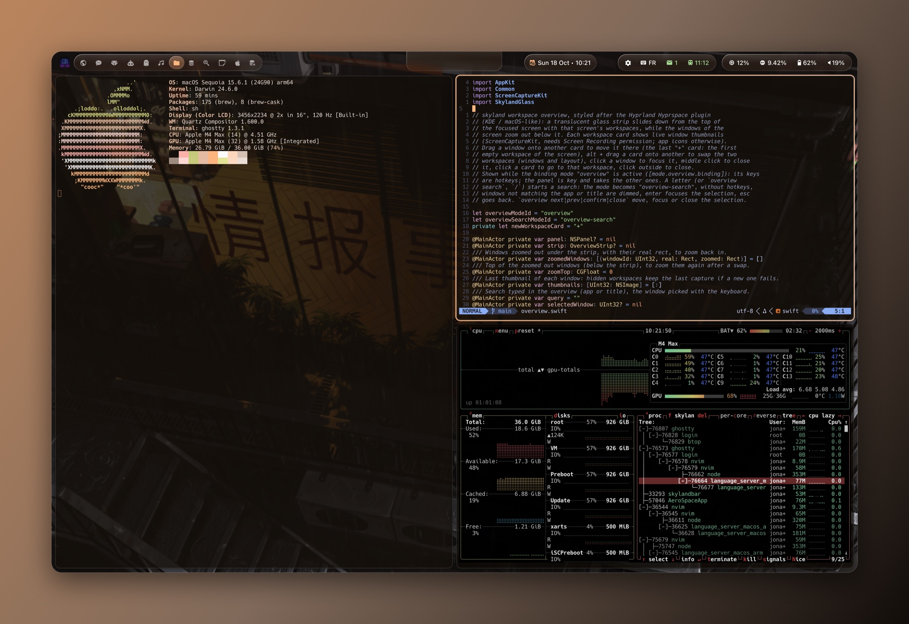
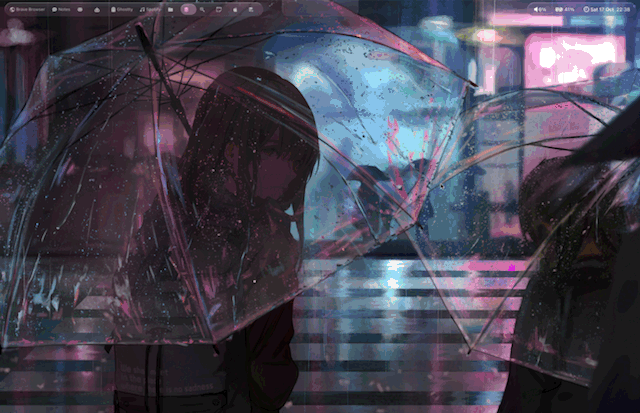
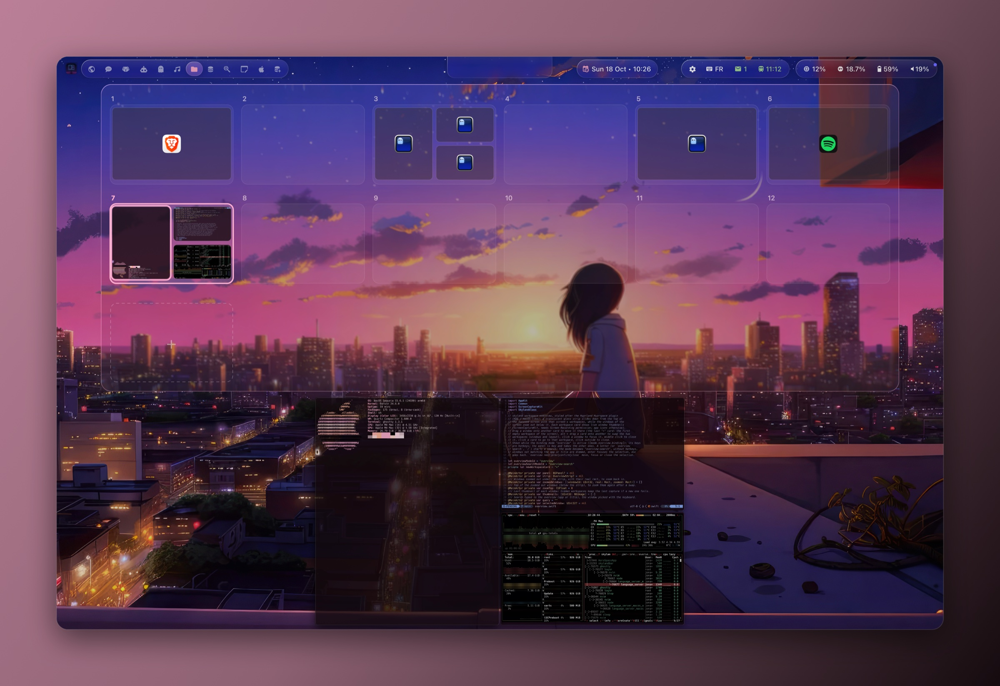
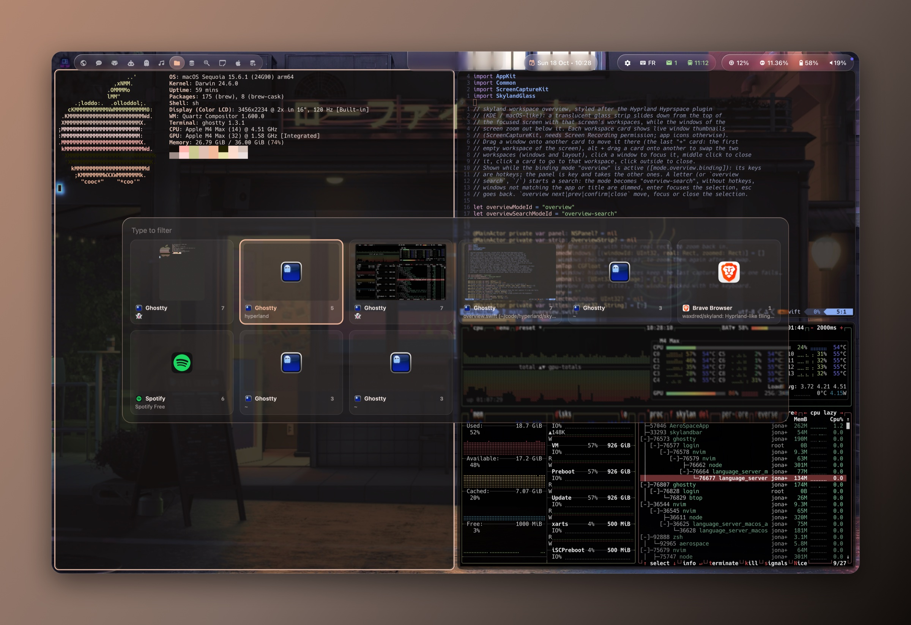
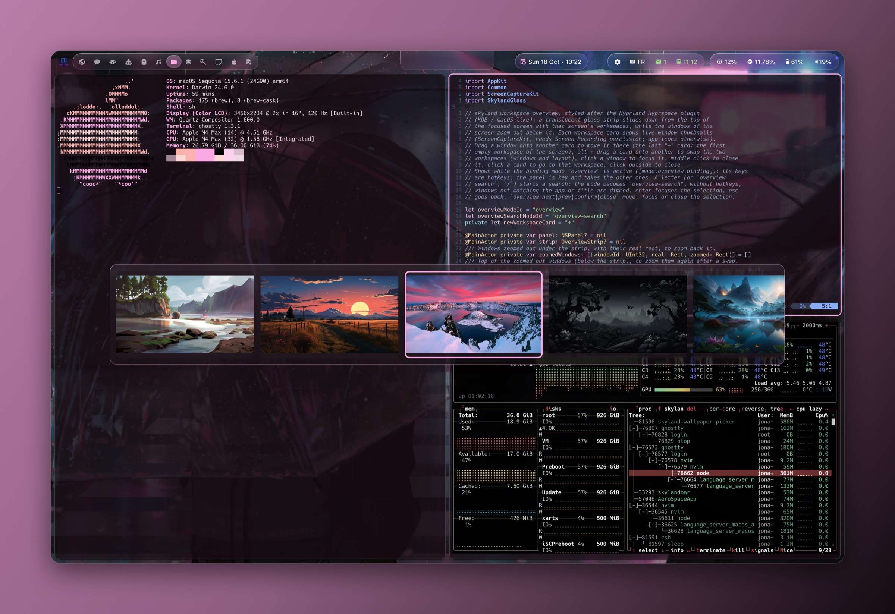
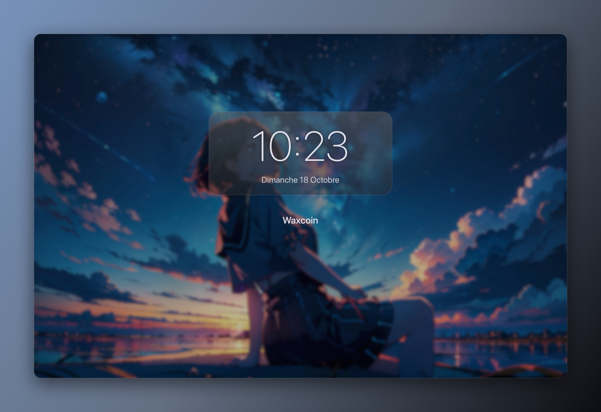
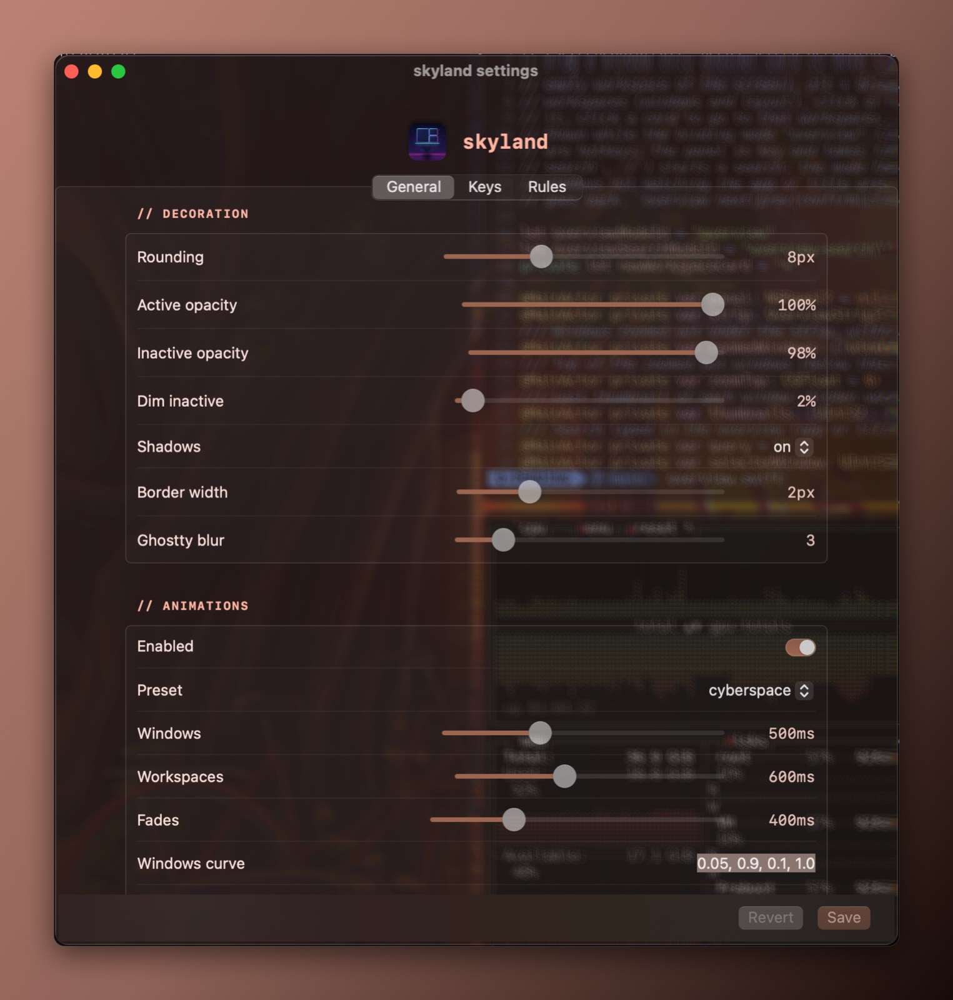
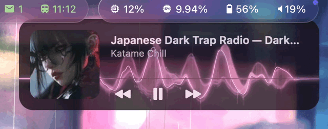
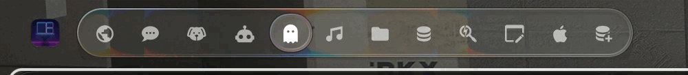
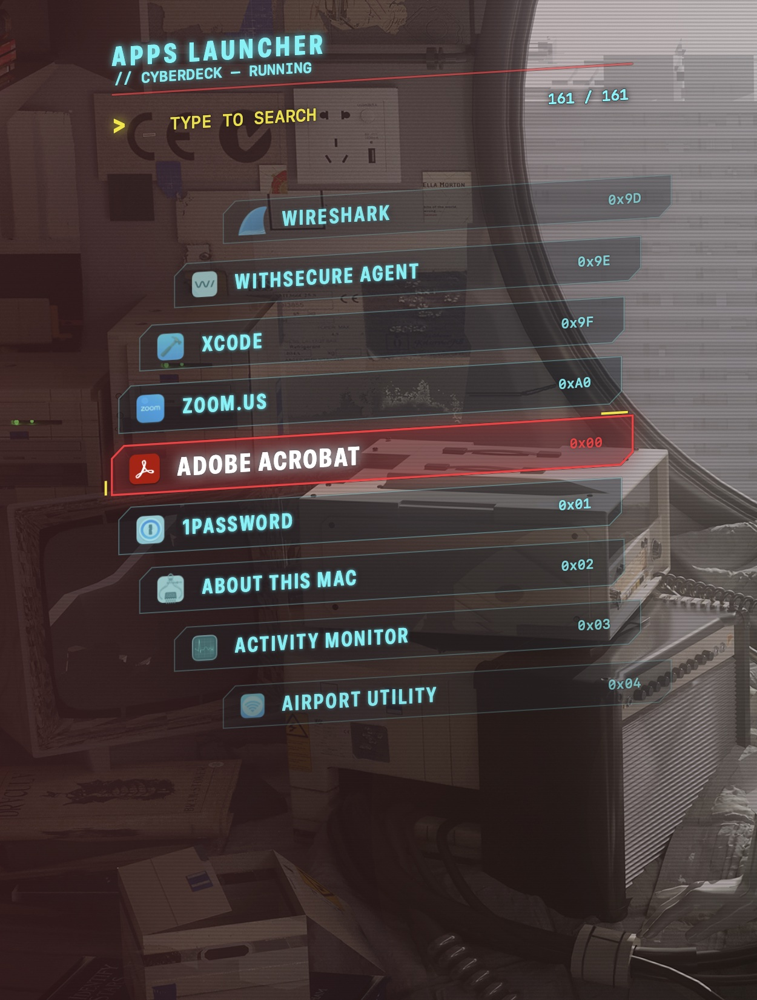

Hyprland's workflow,
on your Mac.
skyland is a tiling window manager for macOS with the layouts, keys, animations and look of a Hyprland desktop: dwindle and master, groups, scratchpads, rounded corners, blur, Liquid Glass, and colors taken from your wallpaper.
brew install waxdred/tap/skyland
skyland install # dependencies, config, start
skyland doctor # what works, what to fix
Windows that move like Hyprland's
Everything a Hyprland desktop does
Built on AeroSpace's virtual workspaces (no slow macOS Spaces), with what makes Hyprland feel like Hyprland on top.
Dwindle and master layouts
New windows split along the longest side, toward the cursor. Master per workspace, centered on ultrawide screens. alt-j toggles the split.
Hyprland animations
Open, close, move and workspace slides with presets, or paste your bezier and animation lines from hyprland.conf.
Rounded corners, opacity, dim
Active and inactive opacity, dim inactive windows, a rotating gradient border in the theme accent, Ghostty blur.
Groups and tabs
Any container becomes tabs with a tabs bar. Cycle with alt-n, merge with a neighbour with alt-ctrl-h/j/k/l.
Scratchpads and pin
A scratchpad slides in over any workspace, named ones start their app (Spotify on alt-a). Pin a floating window on every workspace.
Window rules
Float, size, center, opacity, rounding, no border, no dim, no animation, per app or title, in TOML or in the settings window.
Binding modes
Hyprland submaps, with a HUD that lists the keys of the active mode. Bindings follow your keyboard layout (AZERTY, QWERTY).
Trackpad swipe
Three fingers move between workspaces: the windows and the bar's lens follow your fingers and spring back if you let go halfway.
Overview and switcher
Every workspace as a card with its windows (cmd-up), and a window switcher with live thumbnails, held like cmd-tab.
Themes from your wallpaper
18 themes from 43PR's dotfiles, or colors generated from the wallpaper, light or dark picked from its brightness. macOS follows.
Glass panels
Overview, switcher, HUDs, settings, wallpaper picker and media widget in refractive glass, or in a metal blur.
The rest of the desktop
A lock screen, a wallpaper picker, a media widget with audio bars, a settings window that edits your config, a shortcut cheat sheet.
See it
Windows rez in, tiles swap with alt + drag, the switcher and the overview, a window rule, the resize mode HUD.







skylandbar
The bar of skyland, in Liquid Glass on every macOS. A selection lens flows between workspaces like a drop of water, follows your swipe, and the notch opens into a glass panel. It speaks SketchyBar: your sketchybarrc and SbarLua configs run as they are.


skyland-cyberdeck
Cyberpunk HUD pieces: an apps launcher (alt-d), a messages panel with a scripting API, and a HUD with live system data, Wi-Fi, Bluetooth and your agents.
cyberdeck docsWorks with SIP on
Tiling and the whole desktop need nothing special. The window effects use a scripting addition injected into Dock, like yabai's, and need System Integrity Protection partly off. Your choice.
| With SIP on | With the Dock payload (SIP partly off) |
|---|---|
| Dwindle, master, groups, scratchpads, window rules | Rounded corners |
| alt + mouse move and resize | Active and inactive opacity, dim |
| Workspaces per screen, overview, switcher | Window and workspace animations, fades |
| Themes, wallpaper colors, light and dark | Floating windows kept on top |
| skylandbar or SketchyBar, border, settings, lock screen, media widget, cyberdeck |
Try it in two minutes
Homebrew installs it, skyland doctor tells you what is missing. Your existing AeroSpace config keeps working.
Credits: AeroSpace (the window manager skyland is forked from), yabai (Dock injection), 43PR's dotfiles (themes and default config), matugen.